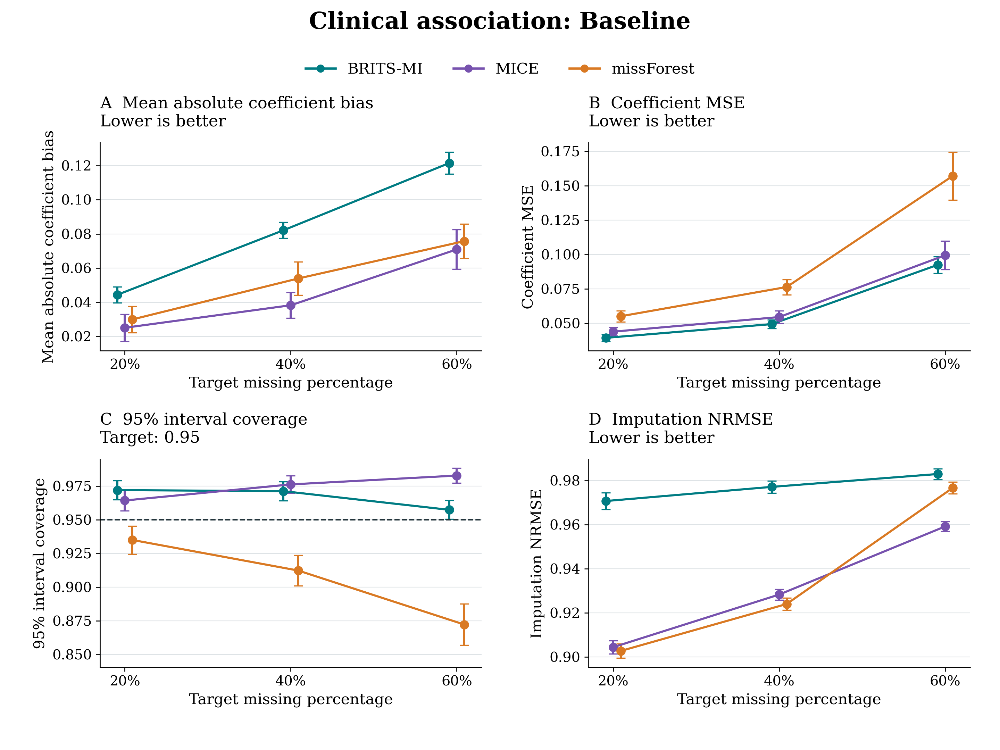
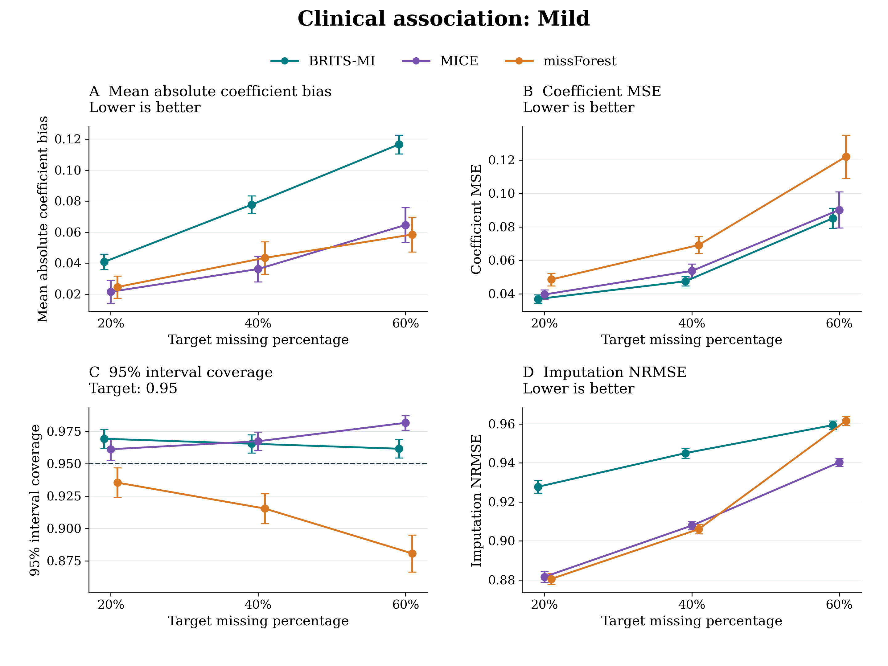
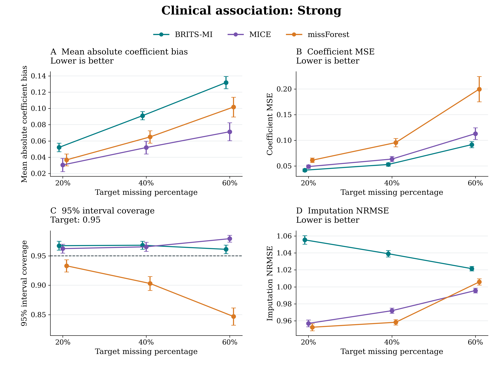
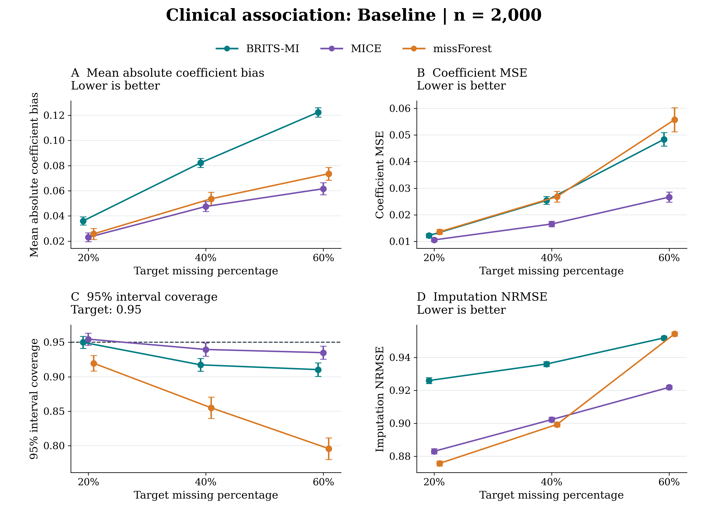
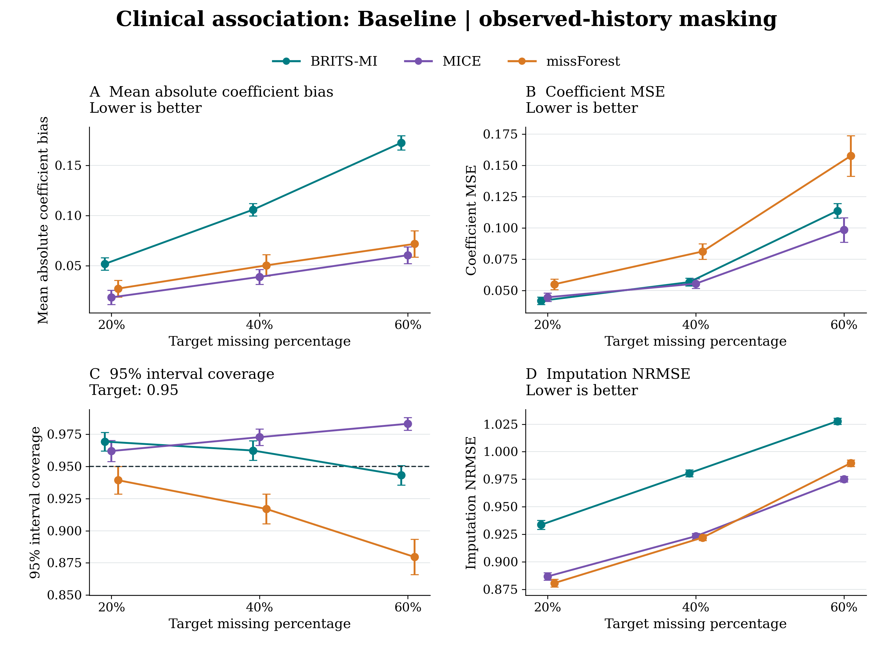
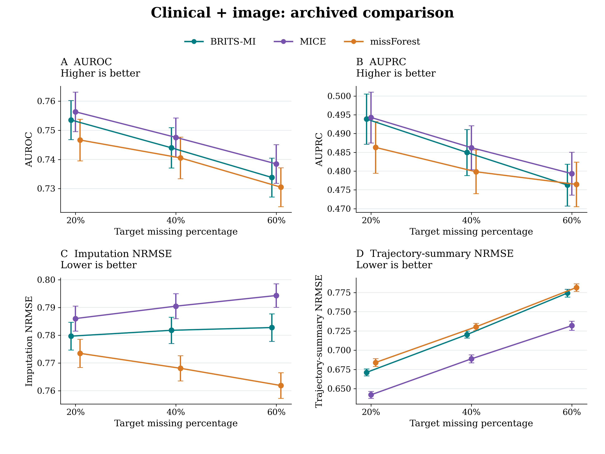
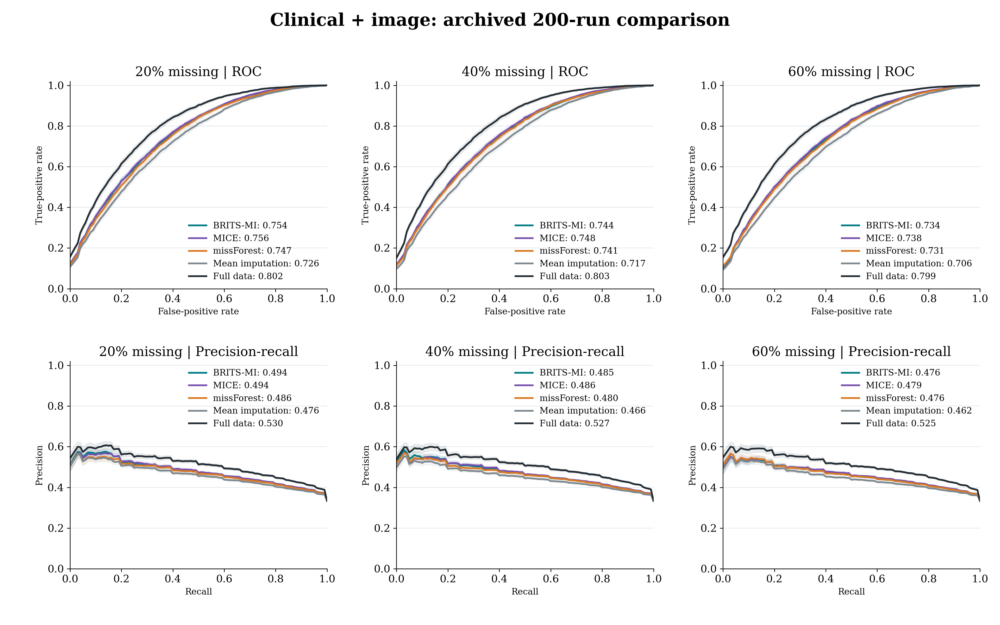

Completed evaluation: 200 independent cohorts per scenario and missing percentage; M = 20 for multiple imputation. The current conditional-mean, bootstrap and residual-noise engine is distinct from the newer small joint-likelihood/HMC pilot.
At n = 500, BRITS-MI has lower coefficient MSE than MICE and missForest in the original clinical scenarios. Its reconstruction error is higher. At n = 2,000, MICE has lower coefficient MSE and coverage closer to 0.95. These differences are retained rather than selecting only favorable settings.
Points show estimates across independent cohorts; bars are 1.96 times Monte Carlo SE, not individual coefficient confidence intervals. Overall coverage averages the 13 term indicators within a cohort before averaging across cohorts. Mean absolute bias averages the absolute term-specific biases; its Monte Carlo SE uses 1,000 cohort bootstrap resamples. Other Monte Carlo SEs use between-cohort variation. All methods and invalid-fit denominators are in the tables; figures emphasize the three primary competing imputers. AUPRC is macro average precision, not the area under the interpolated displayed precision-recall line.
No real-data records or results are included in this public bundle. The 3,995-person TE source and the older 2,209-person eligible analysis are different populations. The newer full-cohort, 18-term specification still needs its own masking analysis.



| Scenario | Missing percentage | Method | Valid / attempted | mean absolute bias | coefficient mse | coverage | imputation nrmse | trajectory nrmse |
|---|---|---|---|---|---|---|---|---|
| Baseline | 20% | BRITS-MI | 200 / 200 | 0.044 (0.002) | 0.039 (0.001) | 0.972 (0.004) | 0.971 (0.002) | 0.409 (0.001) |
| Baseline | 20% | Complete case | 132 / 200 | 0.182 (0.041) | 1.746 (0.540) | 0.962 (0.006) | Not estimable | Not estimable |
| Baseline | 20% | Full data | 200 / 200 | 0.015 (0.003) | 0.044 (0.001) | 0.951 (0.004) | 0.000 (0.000) | 0.000 (0.000) |
| Baseline | 20% | MICE | 200 / 200 | 0.025 (0.004) | 0.044 (0.002) | 0.964 (0.004) | 0.904 (0.002) | 0.363 (0.001) |
| Baseline | 20% | Mean imputation | 200 / 200 | 0.077 (0.003) | 0.047 (0.001) | 0.920 (0.005) | 1.244 (0.002) | 0.569 (0.001) |
| Baseline | 20% | missForest | 200 / 200 | 0.030 (0.004) | 0.055 (0.002) | 0.935 (0.005) | 0.903 (0.002) | 0.367 (0.001) |
| Baseline | 40% | BRITS-MI | 200 / 200 | 0.082 (0.002) | 0.049 (0.002) | 0.971 (0.004) | 0.977 (0.001) | 0.599 (0.001) |
| Baseline | 40% | Complete case | 0 / 200 | Not estimable | Not estimable | Not estimable | Not estimable | Not estimable |
| Baseline | 40% | Full data | 200 / 200 | 0.015 (0.003) | 0.044 (0.001) | 0.951 (0.004) | 0.000 (0.000) | 0.000 (0.000) |
| Baseline | 40% | MICE | 200 / 200 | 0.038 (0.004) | 0.055 (0.002) | 0.976 (0.003) | 0.928 (0.001) | 0.544 (0.001) |
| Baseline | 40% | Mean imputation | 200 / 200 | 0.125 (0.003) | 0.063 (0.002) | 0.873 (0.006) | 1.179 (0.001) | 0.783 (0.001) |
| Baseline | 40% | missForest | 200 / 200 | 0.054 (0.005) | 0.076 (0.003) | 0.912 (0.006) | 0.924 (0.001) | 0.543 (0.001) |
| Baseline | 60% | BRITS-MI | 200 / 200 | 0.121 (0.003) | 0.093 (0.003) | 0.957 (0.004) | 0.983 (0.001) | 0.749 (0.002) |
| Baseline | 60% | Complete case | 0 / 200 | Not estimable | Not estimable | Not estimable | Not estimable | Not estimable |
| Baseline | 60% | Full data | 200 / 200 | 0.015 (0.003) | 0.044 (0.001) | 0.951 (0.004) | 0.000 (0.000) | 0.000 (0.000) |
| Baseline | 60% | MICE | 200 / 200 | 0.071 (0.006) | 0.100 (0.005) | 0.983 (0.003) | 0.959 (0.001) | 0.706 (0.001) |
| Baseline | 60% | Mean imputation | 200 / 200 | 0.167 (0.004) | 0.100 (0.003) | 0.843 (0.006) | 1.151 (0.001) | 0.949 (0.001) |
| Baseline | 60% | missForest | 200 / 200 | 0.076 (0.005) | 0.157 (0.009) | 0.872 (0.008) | 0.977 (0.001) | 0.717 (0.002) |
| Mild | 20% | BRITS-MI | 200 / 200 | 0.041 (0.003) | 0.037 (0.001) | 0.969 (0.004) | 0.928 (0.002) | 0.394 (0.001) |
| Mild | 20% | Complete case | 109 / 200 | 0.170 (0.039) | 1.824 (0.412) | 0.969 (0.005) | Not estimable | Not estimable |
| Mild | 20% | Full data | 200 / 200 | 0.012 (0.003) | 0.039 (0.002) | 0.950 (0.005) | 0.000 (0.000) | 0.000 (0.000) |
| Mild | 20% | MICE | 200 / 200 | 0.021 (0.004) | 0.040 (0.001) | 0.961 (0.004) | 0.882 (0.001) | 0.360 (0.001) |
| Mild | 20% | Mean imputation | 200 / 200 | 0.073 (0.003) | 0.044 (0.001) | 0.917 (0.006) | 1.165 (0.002) | 0.538 (0.001) |
| Mild | 20% | missForest | 200 / 200 | 0.025 (0.004) | 0.049 (0.002) | 0.935 (0.006) | 0.881 (0.001) | 0.365 (0.001) |
| Mild | 40% | BRITS-MI | 200 / 200 | 0.078 (0.003) | 0.047 (0.001) | 0.965 (0.004) | 0.945 (0.001) | 0.580 (0.001) |
| Mild | 40% | Complete case | 0 / 200 | Not estimable | Not estimable | Not estimable | Not estimable | Not estimable |
| Mild | 40% | Full data | 200 / 200 | 0.012 (0.003) | 0.039 (0.002) | 0.950 (0.005) | 0.000 (0.000) | 0.000 (0.000) |
| Mild | 40% | MICE | 200 / 200 | 0.036 (0.004) | 0.054 (0.002) | 0.967 (0.004) | 0.908 (0.001) | 0.537 (0.001) |
| Mild | 40% | Mean imputation | 200 / 200 | 0.127 (0.004) | 0.061 (0.002) | 0.869 (0.006) | 1.124 (0.001) | 0.743 (0.001) |
| Mild | 40% | missForest | 200 / 200 | 0.043 (0.005) | 0.069 (0.003) | 0.915 (0.006) | 0.906 (0.001) | 0.539 (0.001) |
| Mild | 60% | BRITS-MI | 200 / 200 | 0.117 (0.003) | 0.085 (0.003) | 0.962 (0.004) | 0.959 (0.001) | 0.732 (0.001) |
| Mild | 60% | Complete case | 0 / 200 | Not estimable | Not estimable | Not estimable | Not estimable | Not estimable |
| Mild | 60% | Full data | 200 / 200 | 0.012 (0.003) | 0.039 (0.002) | 0.950 (0.005) | 0.000 (0.000) | 0.000 (0.000) |
| Mild | 60% | MICE | 200 / 200 | 0.065 (0.006) | 0.090 (0.005) | 0.982 (0.003) | 0.940 (0.001) | 0.695 (0.001) |
| Mild | 60% | Mean imputation | 200 / 200 | 0.169 (0.004) | 0.096 (0.004) | 0.845 (0.006) | 1.103 (0.001) | 0.898 (0.001) |
| Mild | 60% | missForest | 200 / 200 | 0.058 (0.006) | 0.122 (0.007) | 0.881 (0.007) | 0.962 (0.001) | 0.712 (0.002) |
| Strong | 20% | BRITS-MI | 200 / 200 | 0.052 (0.003) | 0.042 (0.001) | 0.967 (0.004) | 1.055 (0.003) | 0.447 (0.002) |
| Strong | 20% | Complete case | 145 / 200 | 0.165 (0.080) | 3.482 (2.609) | 0.955 (0.005) | Not estimable | Not estimable |
| Strong | 20% | Full data | 200 / 200 | 0.019 (0.004) | 0.048 (0.002) | 0.950 (0.004) | 0.000 (0.000) | 0.000 (0.000) |
| Strong | 20% | MICE | 200 / 200 | 0.031 (0.004) | 0.049 (0.002) | 0.962 (0.004) | 0.957 (0.002) | 0.384 (0.001) |
| Strong | 20% | Mean imputation | 200 / 200 | 0.079 (0.003) | 0.050 (0.002) | 0.912 (0.005) | 1.365 (0.003) | 0.621 (0.001) |
| Strong | 20% | missForest | 200 / 200 | 0.037 (0.004) | 0.061 (0.002) | 0.933 (0.005) | 0.952 (0.002) | 0.384 (0.001) |
| Strong | 40% | BRITS-MI | 200 / 200 | 0.091 (0.003) | 0.053 (0.002) | 0.968 (0.003) | 1.039 (0.002) | 0.645 (0.002) |
| Strong | 40% | Complete case | 0 / 200 | Not estimable | Not estimable | Not estimable | Not estimable | Not estimable |
| Strong | 40% | Full data | 200 / 200 | 0.019 (0.004) | 0.048 (0.002) | 0.950 (0.004) | 0.000 (0.000) | 0.000 (0.000) |
| Strong | 40% | MICE | 200 / 200 | 0.052 (0.004) | 0.063 (0.003) | 0.965 (0.004) | 0.972 (0.002) | 0.574 (0.002) |
| Strong | 40% | Mean imputation | 200 / 200 | 0.118 (0.003) | 0.066 (0.002) | 0.873 (0.006) | 1.261 (0.002) | 0.844 (0.001) |
| Strong | 40% | missForest | 200 / 200 | 0.065 (0.004) | 0.095 (0.004) | 0.903 (0.006) | 0.958 (0.002) | 0.562 (0.002) |
| Strong | 60% | BRITS-MI | 200 / 200 | 0.132 (0.004) | 0.091 (0.003) | 0.961 (0.004) | 1.022 (0.001) | 0.787 (0.002) |
| Strong | 60% | Complete case | 0 / 200 | Not estimable | Not estimable | Not estimable | Not estimable | Not estimable |
| Strong | 60% | Full data | 200 / 200 | 0.019 (0.004) | 0.048 (0.002) | 0.950 (0.004) | 0.000 (0.000) | 0.000 (0.000) |
| Strong | 60% | MICE | 200 / 200 | 0.071 (0.006) | 0.113 (0.006) | 0.979 (0.003) | 0.996 (0.001) | 0.742 (0.002) |
| Strong | 60% | Mean imputation | 200 / 200 | 0.152 (0.004) | 0.104 (0.003) | 0.865 (0.006) | 1.218 (0.001) | 1.022 (0.002) |
| Strong | 60% | missForest | 200 / 200 | 0.102 (0.006) | 0.200 (0.013) | 0.847 (0.008) | 1.006 (0.002) | 0.742 (0.002) |
Numerical table | Matched contrasts | All 13 coefficient terms

| Scenario | Missing percentage | Method | Valid / attempted | mean absolute bias | coefficient mse | coverage | imputation nrmse | trajectory nrmse |
|---|---|---|---|---|---|---|---|---|
| Baseline | 20% | BRITS-MI | 200 / 200 | 0.036 (0.002) | 0.012 (0.000) | 0.950 (0.004) | 0.926 (0.001) | 0.378 (0.001) |
| Baseline | 20% | Complete case | 200 / 200 | 0.080 (0.004) | 0.107 (0.004) | 0.925 (0.005) | Not estimable | Not estimable |
| Baseline | 20% | Full data | 200 / 200 | 0.006 (0.002) | 0.010 (0.000) | 0.951 (0.005) | 0.000 (0.000) | 0.000 (0.000) |
| Baseline | 20% | MICE | 200 / 200 | 0.023 (0.002) | 0.011 (0.000) | 0.955 (0.004) | 0.883 (0.001) | 0.354 (0.001) |
| Baseline | 20% | Mean imputation | 200 / 200 | 0.072 (0.002) | 0.016 (0.000) | 0.839 (0.006) | 1.242 (0.001) | 0.569 (0.001) |
| Baseline | 20% | missForest | 200 / 200 | 0.026 (0.002) | 0.014 (0.000) | 0.920 (0.006) | 0.876 (0.001) | 0.351 (0.001) |
| Baseline | 40% | BRITS-MI | 200 / 200 | 0.082 (0.002) | 0.025 (0.001) | 0.917 (0.005) | 0.936 (0.001) | 0.555 (0.001) |
| Baseline | 40% | Complete case | 2 / 200 | 0.756 (0.370) | 2.838 (2.195) | 1.000 (0.000) | Not estimable | Not estimable |
| Baseline | 40% | Full data | 200 / 200 | 0.006 (0.002) | 0.010 (0.000) | 0.951 (0.005) | 0.000 (0.000) | 0.000 (0.000) |
| Baseline | 40% | MICE | 200 / 200 | 0.048 (0.002) | 0.017 (0.001) | 0.940 (0.005) | 0.902 (0.001) | 0.527 (0.001) |
| Baseline | 40% | Mean imputation | 200 / 200 | 0.130 (0.002) | 0.033 (0.001) | 0.674 (0.007) | 1.180 (0.001) | 0.783 (0.001) |
| Baseline | 40% | missForest | 200 / 200 | 0.054 (0.003) | 0.027 (0.001) | 0.855 (0.008) | 0.899 (0.001) | 0.520 (0.001) |
| Baseline | 60% | BRITS-MI | 200 / 200 | 0.122 (0.002) | 0.048 (0.001) | 0.910 (0.005) | 0.952 (0.001) | 0.708 (0.001) |
| Baseline | 60% | Complete case | 0 / 200 | Not estimable | Not estimable | Not estimable | Not estimable | Not estimable |
| Baseline | 60% | Full data | 200 / 200 | 0.006 (0.002) | 0.010 (0.000) | 0.951 (0.005) | 0.000 (0.000) | 0.000 (0.000) |
| Baseline | 60% | MICE | 200 / 200 | 0.062 (0.002) | 0.027 (0.001) | 0.935 (0.005) | 0.922 (0.001) | 0.673 (0.001) |
| Baseline | 60% | Mean imputation | 200 / 200 | 0.169 (0.002) | 0.056 (0.001) | 0.627 (0.006) | 1.150 (0.001) | 0.948 (0.001) |
| Baseline | 60% | missForest | 200 / 200 | 0.074 (0.003) | 0.056 (0.002) | 0.796 (0.008) | 0.954 (0.001) | 0.685 (0.001) |
Numerical table | Matched contrasts | All 13 coefficient terms

| Scenario | Missing percentage | Method | Valid / attempted | mean absolute bias | coefficient mse | coverage | imputation nrmse | trajectory nrmse |
|---|---|---|---|---|---|---|---|---|
| Baseline | 20% | BRITS-MI | 200 / 200 | 0.052 (0.003) | 0.042 (0.001) | 0.969 (0.004) | 0.934 (0.002) | 0.350 (0.001) |
| Baseline | 20% | Complete case | 136 / 200 | 0.306 (0.060) | 6.443 (3.548) | 0.954 (0.005) | Not estimable | Not estimable |
| Baseline | 20% | Full data | 200 / 200 | 0.012 (0.003) | 0.043 (0.002) | 0.946 (0.005) | 0.000 (0.000) | 0.000 (0.000) |
| Baseline | 20% | MICE | 200 / 200 | 0.018 (0.004) | 0.045 (0.002) | 0.962 (0.004) | 0.887 (0.002) | 0.331 (0.001) |
| Baseline | 20% | Mean imputation | 200 / 200 | 0.051 (0.003) | 0.048 (0.002) | 0.934 (0.005) | 1.228 (0.002) | 0.463 (0.001) |
| Baseline | 20% | missForest | 200 / 200 | 0.027 (0.004) | 0.055 (0.002) | 0.939 (0.005) | 0.881 (0.002) | 0.329 (0.001) |
| Baseline | 40% | BRITS-MI | 200 / 200 | 0.106 (0.003) | 0.057 (0.002) | 0.962 (0.004) | 0.981 (0.002) | 0.523 (0.001) |
| Baseline | 40% | Complete case | 0 / 200 | Not estimable | Not estimable | Not estimable | Not estimable | Not estimable |
| Baseline | 40% | Full data | 200 / 200 | 0.012 (0.003) | 0.043 (0.002) | 0.946 (0.005) | 0.000 (0.000) | 0.000 (0.000) |
| Baseline | 40% | MICE | 200 / 200 | 0.039 (0.004) | 0.056 (0.002) | 0.973 (0.003) | 0.923 (0.001) | 0.488 (0.001) |
| Baseline | 40% | Mean imputation | 200 / 200 | 0.100 (0.005) | 0.067 (0.002) | 0.904 (0.006) | 1.220 (0.001) | 0.656 (0.001) |
| Baseline | 40% | missForest | 200 / 200 | 0.050 (0.005) | 0.081 (0.003) | 0.917 (0.006) | 0.922 (0.001) | 0.489 (0.001) |
| Baseline | 60% | BRITS-MI | 200 / 200 | 0.173 (0.004) | 0.114 (0.003) | 0.943 (0.004) | 1.028 (0.001) | 0.676 (0.001) |
| Baseline | 60% | Complete case | 0 / 200 | Not estimable | Not estimable | Not estimable | Not estimable | Not estimable |
| Baseline | 60% | Full data | 200 / 200 | 0.012 (0.003) | 0.043 (0.002) | 0.946 (0.005) | 0.000 (0.000) | 0.000 (0.000) |
| Baseline | 60% | MICE | 200 / 200 | 0.060 (0.004) | 0.099 (0.005) | 0.983 (0.003) | 0.975 (0.001) | 0.633 (0.001) |
| Baseline | 60% | Mean imputation | 200 / 200 | 0.152 (0.005) | 0.116 (0.003) | 0.857 (0.006) | 1.211 (0.001) | 0.803 (0.001) |
| Baseline | 60% | missForest | 200 / 200 | 0.072 (0.007) | 0.158 (0.008) | 0.880 (0.007) | 0.990 (0.002) | 0.648 (0.001) |
Numerical table | Matched contrasts | All 13 coefficient terms
Archived image results: training labels entered MICE/missForest; BRITS-MI/MICE received 20 classifier fits, single-imputation methods received one. The corrected comparison is a separate run, not these numbers.


| Scenario | Missing percentage | Method | Valid / attempted | imputation nrmse | trajectory nrmse | auroc | auprc | log loss |
|---|---|---|---|---|---|---|---|---|
| Clinical + image | 20% | BRITS-MI | 200 / 200 | 0.780 (0.003) | 0.671 (0.002) | 0.754 (0.003) | 0.494 (0.003) | 0.560 (0.003) |
| Clinical + image | 20% | Complete case | 0 / 200 | Not estimable | Not estimable | Not estimable | Not estimable | Not estimable |
| Clinical + image | 20% | Full data | 200 / 200 | 0.000 (0.000) | 0.000 (0.000) | 0.802 (0.003) | 0.530 (0.004) | 0.529 (0.004) |
| Clinical + image | 20% | MICE | 200 / 200 | 0.786 (0.002) | 0.642 (0.002) | 0.756 (0.003) | 0.494 (0.003) | 0.558 (0.003) |
| Clinical + image | 20% | Mean imputation | 200 / 200 | 1.202 (0.005) | 0.907 (0.004) | 0.726 (0.004) | 0.476 (0.003) | 0.592 (0.004) |
| Clinical + image | 20% | missForest | 200 / 200 | 0.773 (0.003) | 0.684 (0.003) | 0.747 (0.004) | 0.486 (0.004) | 0.578 (0.004) |
| Clinical + image | 40% | BRITS-MI | 200 / 200 | 0.782 (0.002) | 0.720 (0.002) | 0.744 (0.004) | 0.485 (0.003) | 0.568 (0.003) |
| Clinical + image | 40% | Complete case | 0 / 200 | Not estimable | Not estimable | Not estimable | Not estimable | Not estimable |
| Clinical + image | 40% | Full data | 200 / 200 | 0.000 (0.000) | 0.000 (0.000) | 0.803 (0.004) | 0.527 (0.004) | 0.527 (0.004) |
| Clinical + image | 40% | MICE | 200 / 200 | 0.790 (0.002) | 0.689 (0.003) | 0.748 (0.003) | 0.486 (0.003) | 0.565 (0.003) |
| Clinical + image | 40% | Mean imputation | 200 / 200 | 1.181 (0.004) | 0.955 (0.003) | 0.717 (0.004) | 0.466 (0.003) | 0.599 (0.004) |
| Clinical + image | 40% | missForest | 200 / 200 | 0.768 (0.002) | 0.730 (0.002) | 0.741 (0.004) | 0.480 (0.003) | 0.583 (0.004) |
| Clinical + image | 60% | BRITS-MI | 200 / 200 | 0.783 (0.003) | 0.774 (0.003) | 0.734 (0.003) | 0.476 (0.003) | 0.575 (0.003) |
| Clinical + image | 60% | Complete case | 0 / 200 | Not estimable | Not estimable | Not estimable | Not estimable | Not estimable |
| Clinical + image | 60% | Full data | 200 / 200 | 0.000 (0.000) | 0.000 (0.000) | 0.799 (0.003) | 0.525 (0.004) | 0.528 (0.004) |
| Clinical + image | 60% | MICE | 200 / 200 | 0.794 (0.002) | 0.732 (0.003) | 0.738 (0.003) | 0.479 (0.003) | 0.571 (0.003) |
| Clinical + image | 60% | Mean imputation | 200 / 200 | 1.162 (0.004) | 1.004 (0.004) | 0.706 (0.004) | 0.462 (0.003) | 0.607 (0.004) |
| Clinical + image | 60% | missForest | 200 / 200 | 0.762 (0.002) | 0.782 (0.003) | 0.731 (0.003) | 0.476 (0.003) | 0.590 (0.004) |